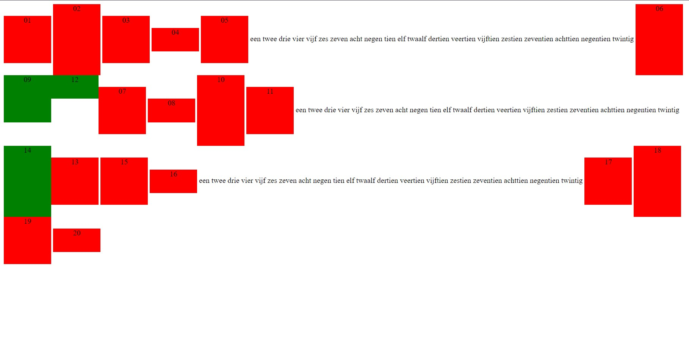
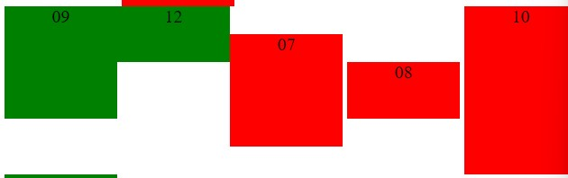

Ga na dat de floaty elementen naar links verplaatst werden 'in hun regel'

Ga na dat er geen grote ruimte achterblijft tussen elementen 08 en 10 waar element 09 stond.
De ruimte tussen de elementen blijft hetzelfde.
Ga na dat 12 en 14 niet altijd netjes naast elkaar staan, het hangt er maar vanaf of ze in dezelfde regel staan.
Ze blijven naast elkaar staan tenzij het tablad op fullscreen komt, dan gaat 12 naast 9 gaan staan doordat het scherm groter word.
Ga na dat er geen kleine ruimte is tussen de groene floaty elementen en het rode element rechts ernaast, maar wel tussen de rode elementen onderling.

Ga na dat dit helemaal geen invloed heeft qua positionering, er wordt niks 'gecleared'.
Er verandert helemaal niets behalve dat element 17 de kleur blauw krijgt.